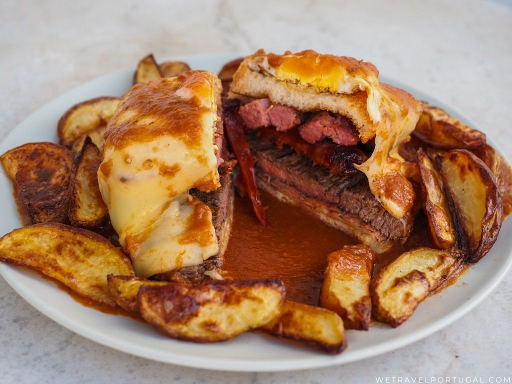

Homepage
Francesinha

Ready-to-eat Francesinha
Description:
Francesinha is a sandwich, often accompanied by french fries.
It has its origins in the city of Porto, Portugal and, despite its many possible variations, the sauce with which it is ladled gives it a very distinct flavour.
Ingredients:
- 2 Thick Slices of Loaf Bread
- 1 Linguiça
- 1 Sausage
- 2 Slices of Ham
- 1 Steak
- 4-6 Slices of Cheese
- 1 Egg (optional)
- French Fries (optional)
Steps:
- Slightly toast the bread - either in the oven or in the toaster.
- Cook the steak medium/rare.
- Cut the linguiça and sausage, preferably thinly cut, and cook them in the same pan or toaster used for the steak.
- Fry the potatoes and/or egg(s).
- Assemble the ingredients, so as to make a sandwich. The order of the ingredients can be whatever you choose, with the exception of the cheese and egg, which typically go over the top slice of bread - you can also pour some sauce over each ingredient as you assemble the sandwich.
- Place the French Fries all around the sandwich and pour the sauce over everything.